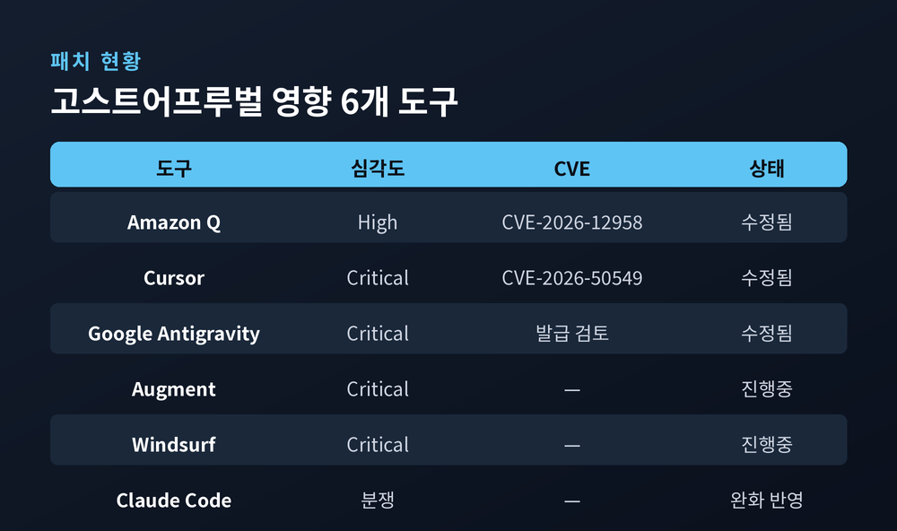
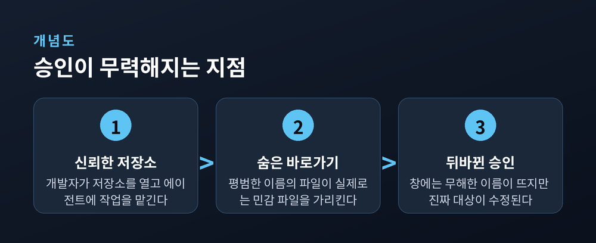
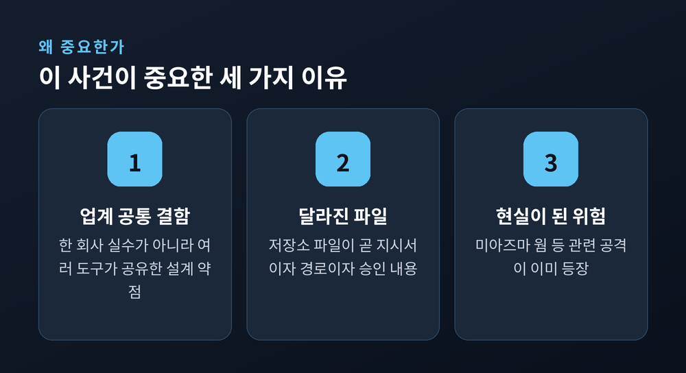
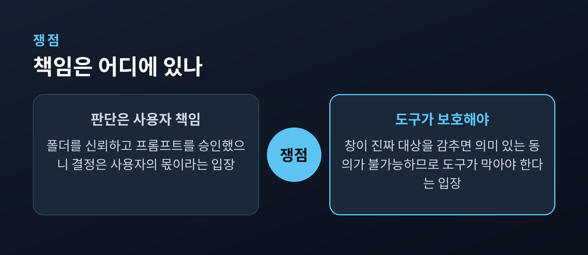
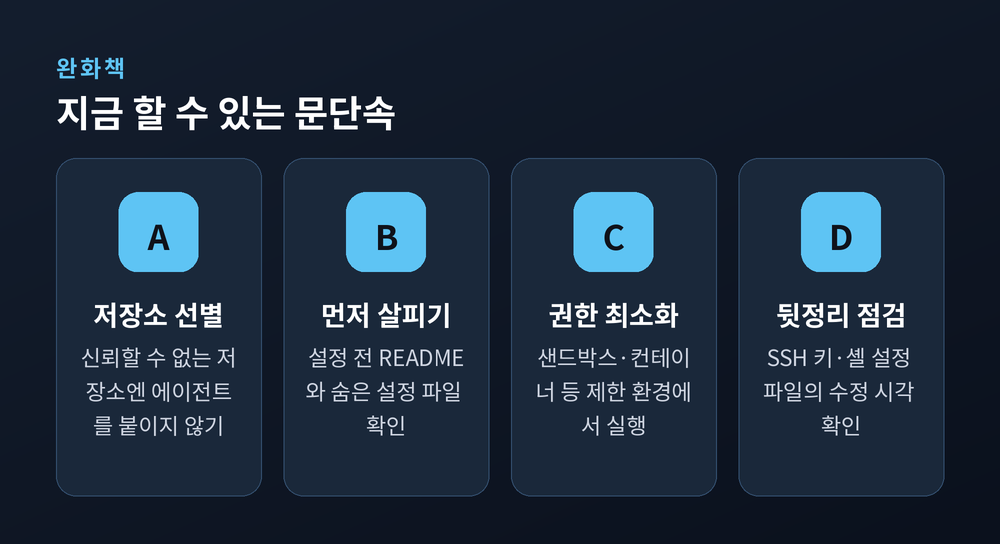

승인창이 거짓말할 때 — Wiz가 밝힌 6개 도구 공통 결함
이번 글에서는 보안업체 Wiz가 공개한 AI 코딩 어시스턴트의 공통 결함 '고스트어프루벌(GhostApproval)'을 정리해 보겠습니다.
먼저 결론부터 말씀드립니다. 클로드 코드, 커서 등 6개 코딩 도구가 심볼릭 링크를 제대로 확인하지 않아, 사용자가 승인 창에서 본 것과 전혀 다른 파일이 수정될 수 있었습니다. 세 곳은 이미 고쳤고, 두 곳은 아직이며, 한 곳은 결함이 아니라고 반박했습니다.
무슨 일이 있었는지, 왜 이것이 'AI 에이전트 시대의 문단속' 문제인지, 그리고 무엇을 조심해야 하는지 차근차근 짚어보겠습니다.
2026년 7월 8일, 클라우드 보안업체 Wiz의 연구팀이 '고스트어프루벌'이라는 결함을 공개했습니다.
하나의 제품 버그가 아닙니다. 6개의 대표적인 AI 코딩 어시스턴트에 공통으로 존재하는 패턴이라는 점이 핵심입니다. 대상은 아마존 Q 디벨로퍼, 앤스로픽 클로드 코드, 오그먼트(Augment), 커서(Cursor), 구글 앤티그래비티, 윈드서프(Windsurf)입니다.
이 도구들의 매력은 단순합니다. AI가 무언가를 하기 전에 사람에게 "이렇게 할까요?" 하고 물어봅니다. 사람이 승인 버튼을 눌러야 실행됩니다. 이 '사람이 최종 확인하는 안전장치'를 흔히 휴먼 인 더 루프(Human-in-the-Loop)라고 부릅니다.
문제는 그 확인 창이 진실을 보여주지 않을 수 있다는 것이었습니다. 화면에는 무해한 파일 이름이 뜨는데, 실제로는 사용자의 SSH 접속 열쇠나 셸 설정 파일이 바뀌는 상황이 가능했습니다. 최악의 경우 공격자가 개발자의 컴퓨터에 원격으로 접속할 수 있는 길까지 열립니다.
다만 한 가지는 분명히 해두겠습니다. Wiz는 이를 연구 결과로 공개했고, 실제로 이 수법이 공격에 쓰인 정황은 확인되지 않았습니다.

기술 용어가 나오니 쉬운 비유로 풀어보겠습니다.
심볼릭 링크(symlink)는 컴퓨터 파일 세계의 '바로가기'입니다. 겉으로는 A라는 이름표를 달고 있지만, 실제로는 저 멀리 있는 B라는 방으로 통하는 문인 셈입니다. 그 문에 무언가를 써넣으면, A가 아니라 B에 써집니다.
심볼릭 링크 자체는 유닉스 초창기부터 있던 오래된 기능입니다. 새로운 발명이 아닙니다. 수십 년간 보안 사고의 단골 소재였습니다.
고스트어프루벌의 진짜 급소는 여기서 한 걸음 더 나아갑니다. AI가 이미 정체를 알고 있었다는 점입니다.
Wiz가 클로드 코드에서 관찰한 장면은 이렇습니다. AI는 속으로 "이 파일은 사실 zsh 설정 파일이다"라고 정확히 파악하고 있었습니다. 그런데 사용자에게 뜬 창은 단지 "project_settings.json을 수정할까요?"라고만 물었습니다.
AI는 알았고, 사람은 몰랐습니다.
이것이 왜 심각한지는 '동의'라는 말의 무게에서 드러납니다. 우리가 무언가에 동의할 때는 정확한 정보를 전제로 합니다. 창에 뜬 이름이 실제 대상과 다르다면, 사용자는 의미 있는 판단을 내릴 수 없습니다. 동의는 형식적으로 존재하지만, 실질적으로는 텅 비어 있는 셈입니다.
Wiz는 이를 '충분한 정보에 근거한 동의의 우회'라고 표현했습니다. 사람이 여전히 루프 안에 있지만, 그 루프가 사람에게 엉뚱한 것을 보여주고 있다는 뜻입니다.

여기서 한 가지 짚고 넘어가겠습니다. 이 글은 방어를 위한 개념 설명이며, 재현 가능한 공격 절차는 다루지 않습니다.
첫째, 특정 회사의 실수가 아니라 업계 공통의 설계 약점이라는 점입니다.
Wiz만 발견한 것도 아닙니다. 앞서 2026년 5월 어드버사(Adversa) AI가 'SymJack'이라는 이름으로 거의 같은 패턴을 여러 코딩 에이전트에서 보고했습니다. 커서의 보안 권고문에는 또 다른 연구팀 카토(Cato) AI 랩스의 이름도 함께 올라 있습니다. 서로 다른 팀이 같은 결함에 도달했다는 것은, 한 사람의 부주의가 아니라 이 기술의 구조 자체에 틈이 있다는 신호입니다.
둘째, AI 에이전트가 신뢰하는 파일의 성격이 달라졌기 때문입니다.
예전에 코드 저장소 속 파일은 그냥 코드였습니다. 지금은 다릅니다. 그 파일들이 AI가 따르는 '지시서'이면서, 동시에 AI가 작동하는 '경로'이고, 승인창에 무엇이 뜰지까지 좌우합니다. 저장소를 여는 순간, 저장소 자체가 공격 표면이 됩니다.
셋째, 이 위험은 이미 현실로 번지고 있습니다.
2026년 6월에는 '미아즈마(Miasma) 웜'이라는 사례가 있었습니다. 마이크로소프트의 한 저장소에 AI 에이전트 설정 파일을 심어두어, 개발자가 클로드 코드나 커서, 제미나이로 프로젝트를 여는 순간 악성 코드가 실행되도록 만든 방식입니다. 깃허브는 영향을 받은 73개의 마이크로소프트 저장소를 비활성화했습니다.

Wiz는 2026년 초에 6개 벤더 모두에 결함을 알렸습니다. 반응은 세 갈래로 나뉘었습니다.
아마존, 구글, 커서는 취약점으로 인정하고 패치를 내놨습니다. 커서는 3.0 버전에서 고치며 CVE-2026-50549 번호를 부여했고, 아마존은 언어 서버 1.69.0에서 수정해 CVE-2026-12958을 받았습니다. 대체로 자동 업데이트로 반영됩니다.
오그먼트와 윈드서프는 보고를 받았다고 확인했지만, 공개 시점까지 수정을 내놓지 않았습니다. 특히 윈드서프는 승인 버튼이 뜨기도 전에 파일이 먼저 디스크에 써지는 방식이어서, 확인창이 사실상 '되돌리기 버튼'에 가깝다는 지적을 받았습니다.
앤스로픽은 결이 다릅니다. 이것을 결함으로 보지 않는다고 반박했습니다. "사용자가 디렉터리를 신뢰한다고 확인했고, 프롬프트도 직접 승인했으니, 그 판단은 사용자의 몫이며 우리의 위협 모델 밖"이라는 논리입니다.
다만 앤스로픽은 해명도 덧붙였습니다. 심볼릭 링크 경고 기능은 Wiz의 보고보다 9일 앞선 2월 5일(2.1.32 버전)에 이미 자체 보안 강화 차원에서 넣었다는 것입니다. 현재 버전은 민감한 파일에 쓰기 전에 경고를 띄운다고 밝혔습니다.
어느 한쪽을 일방적으로 편들 사안은 아닙니다. 다만 이런 물음은 남습니다. 코딩 도구는 이미 악성 저장소를 신뢰해버린 개발자를 어디까지 보호해야 할까요.

Wiz가 도구 제작사에 권한 원칙은 간명합니다. 승인창을 띄우기 전에 바로가기의 진짜 목적지를 밝혀 보여줄 것. 그 목적지가 작업 폴더 바깥이면 분명히 경고할 것. 그리고 사용자가 실제로 승인하기 전에는 절대 디스크에 쓰지 말 것.
사용하는 쪽에서 지금 할 수 있는 습관도 있습니다. 신뢰할 수 없는 저장소에는 에이전트를 함부로 붙이지 않는 것이 첫걸음입니다. "설정해줘"라고 시키기 전에 README와 숨은 설정 파일을 먼저 훑어보시길 권합니다. 가능하면 에이전트를 제한된 권한이나 샌드박스, 컨테이너 안에서 돌리는 편이 안전합니다.
낯선 저장소를 다룬 뒤에는 뒷정리도 필요합니다. SSH 키 파일이나 셸 시작 파일처럼 작업 폴더 밖에 있는 파일은 평소 눈에 잘 띄지 않습니다. 이런 파일의 수정 시각을 한번 확인해 두면, 무언가 조용히 바뀌었는지 알아챌 수 있습니다.

같은 시기, 커서가 이메일·문서 업무까지 대신하는 범용 에이전트를 준비 중이라는 보도가 나왔습니다.
정확히 해두면, 출시된 제품은 아닙니다. 2026년 7월 9일 디인포메이션(The Information)이 '샌드(Sand)'라는 내부 코드명으로 개발 중이라고 보도했고, 커서는 논평을 거부했습니다. 앤스로픽의 코워크(Cowork), 오픈AI의 챗GPT 워크와 겨루는 자리입니다. 다만 스페이스X의 600억 달러 인수를 앞두고 있어 실제 출시 여부는 불투명합니다.
방향은 분명합니다. 코딩을 돕던 AI가 이메일과 문서, 스프레드시트까지 손을 뻗고 있습니다. 그만큼 AI가 만질 수 있는 파일과 실행할 수 있는 명령의 범위도 넓어집니다.
권한이 넓어질수록, 승인 모델의 작은 틈 하나가 감당하는 무게는 커집니다. 고스트어프루벌이 유독 시의적절하게 다가오는 이유입니다.
정리하면 이렇습니다.
고스트어프루벌은 대단히 새로운 해킹 기술이 아닙니다. 오래된 '바로가기'와, 사람에게 엉뚱한 것을 보여준 확인창이 만난 결과입니다. 그런데 바로 그 평범함이 이 사건의 핵심입니다.
AI에게 더 많은 자율을 넘길수록, 결국 남는 안전장치는 하나입니다 — "루프가 진실을 말할 때에만, 사람의 승인은 안전장치가 된다."
AI가 대신 문을 열어주는 시대입니다. 그렇다면 문단속의 책임은 누구에게 있느냐고 물으신다면, 도구와 사용자 모두에게 있다고 답하겠습니다.